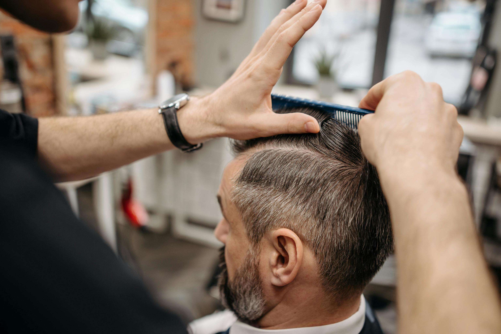

El corte de cabello debe adaptarse a la forma del rostro para resaltar los rasgos:
🔹 Rostro redondo: Cortes con capas largas o en V para afinar la cara. Evitar cortes rectos a la altura de la mandíbula.
🔹 Rostro cuadrado: Cortes desfilados y en capas suaves para suavizar los rasgos angulosos.
🔹 Rostro ovalado: Prácticamente cualquier corte queda bien en este tipo de rostro.
🔹 Rostro alargado: Cortes medianos o con flequillo para acortar visualmente el rostro.
🔹 Rostro en forma de corazón: Cortes en capas y con volumen en la parte baja para equilibrar la forma del rostro.
Existen diferentes técnicas según el efecto deseado:
✅ Tijera sobre peine: Usado para cortes cortos, permite precisión en la longitud.
✅ Point Cutting (Corte en Puntas): Se realiza cortando las puntas en forma de picos para mayor textura.
✅ Desfilado: Se usa una navaja para afinar las puntas y dar un look ligero.
✅ Corte en capas: Secciona el cabello en diferentes largos para crear volumen.
✅ Corte con tijeras dentadas: Ideal para quitar volumen sin afectar la longitud.
✅ Corte en seco vs. mojado: Algunos cabellos rizados se cortan en seco para un mejor control del resultado.
🔸 Tijeras de corte profesional: Para cortes precisos y limpios.
🔸 Tijeras de entresacar: Para reducir volumen sin afectar la longitud.
🔸 Navaja de peluquería: Para cortes desfilados y degradados naturales.
🔸 Máquina de corte: Usada en cortes masculinos y para rapados.
🔸 Peines de peluquería: Para seccionar y desenredar el cabello.
🔸 Cepillos redondos: Para dar forma mientras se seca el cabello.
🔸 Capa de corte: Para proteger la ropa del cliente.
🔸 Pulverizador de agua: Mantiene el cabello húmedo para facilitar el corte.
💇♀️ Mantiene el cabello saludable y libre de puntas abiertas.
💇♂️ Facilita el peinado y el mantenimiento diario.
💇♀️ Da un aspecto más juvenil y renovado.
💇♂️ Aporta volumen y forma según la necesidad del cabello.
💇♀️ Estimula el crecimiento al eliminar el cabello dañado.
💇♂️ Permite probar nuevos estilos y tendencias.
🔹 Cabello corto: Cada 4-6 semanas para mantener la forma.
🔹 Cabello mediano: Cada 6-8 semanas para evitar puntas abiertas.
🔹 Cabello largo: Cada 8-12 semanas para mantenerlo saludable.
🔹 Cabello rizado: Depende del tipo de rizo, pero generalmente cada 10-12 semanas.
🔹 Personas que quieren dejarlo crecer: Cada 3-4 meses para eliminar puntas dañadas sin perder longitud.
♀️